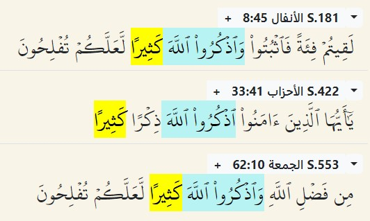

Kitabımızda en sık geçen kelime lafza-i celâl denilen "Allah" sözüdür. Bu kelimenin yazılışı ve okunuşu kural dışıdır: lâm-lâm-hâ birleştirilir ve tek bir sembol olarak yazılır. Her yerde ince okunan lâm burada kalın bir ses verir.
Allah kelimesi iyelik ve çoğul eki kabul etmez. Birdir, tekdir. Kelimenin nasıl kullanıldığına birkaç ayetle örnek verelim:
1. Tur dağında genç bir çoban. Ailesiyle giderken yolu kaybediyor. Dağdaki ışık çağırıyor ve yaklaşınca şu hitabı duyuyor:
20:14 innenî enallâhu lâ ilâhe illâ ene
Benim, Ben Allah, Benden başka ilâh yok
Hz Musa ilk tevhid dersini kayınpederinden almıştı. İkinci ders bu ürkütücü nida oldu. Asıl imtihan işte tam orada başladı: Önce zulüm üstüne kurulan Firavun düzenine karşı, sonra putlar arayan kendi kavmine karşı mücadele sürdü gitti.
2. Kudüs'te yaşlı bir din adamı. Allah'a adanmış yeğeni Meryem'i görüp ona imreniyor. Melekler bir çocuk müjdeleyince şaşırıyor. Meleklerin cevabında şu emir var:

3:41 veżkur rabbeke keśîran
Rabbini çok zikret
(Bu ayette lafza-i celal yok, 5. nota bakın)
Hz Zekeriya'nın hikayesi Kitap'ta böyle bitiyor. Ardından kendi oğlu Yahya ve Meryem'in oğlu İsa aynı mücadeleyi sürdürüyor.
3. Hakikaten, Allah kelimesi dünyada en çok zikredilen söz olmuş. Nasıl? En azından, günde beş vakit, her namazın peşinden gelen tesbihat içinde 99 kere Allah diyoruz. Musevilerin tahrif edilmiş inançlarına göre "bu isim öyle yücedir ki, günahkar insanın ağzına yakışmaz." Kuran'ın tavsiyesi ise her fırsatta O'nu anmak, hatırlamak, dile getirmek.
4. "Allah'ı çokça zikret" emri üç ayette geçiyor: 
8:45 veżkurullâhe keśîran
33:41 veżkurullâhe żikran keśîran
62:10 veżkurullâhe keśîran
Neden Allah'ı anarken "celle celâluh" diyoruz? Çünkü lafza-i celâl... Peki neden "lafza-i celâl?" Cevabı Ramazan'ın son günü, 29. konuda... inşâllah
5. Türkçe'de Allah ile nerdeyse eş-anlamlı kullanılan Rabb kelimesi, Esmâ-i Husnâ içinde değildir, er-rabb şeklinde asla kullanılmaz.
Çünkü Allah bir, rabler çok.